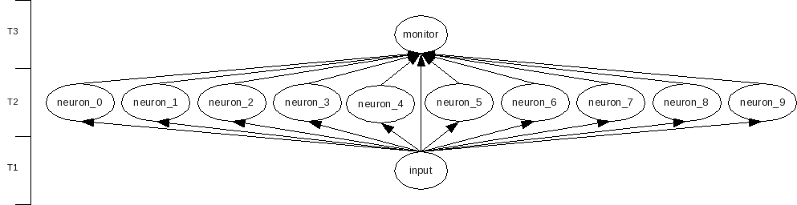
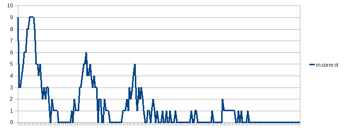
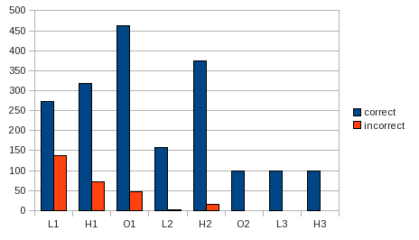

| Application version | beta02 |
| Trad4 version | 3.1 |
| Document version | beta02 |
| Author | schevans |
| Date | 05-02-10 |
This document is in beta. All questions, corrections and requests for clarifications welcome.
The plan is to create a McCulloch-Pitts single layer artificial neural network, show it some images of the digits 0-9 in various fonts, and see what happens. In this case we will create one neuron for each of the target numbers.You might want to skip straight to the results, which are here.

The input show to the neurons is a matrix of pixels representing the numbers 0-9 in three different fonts. For example, below are the number 1 in the three fonts.

The three fonts are LiberationSerif-Bold, Harabara and OptimusPrinceps.
The numbers 0-9 in each font are shown to the network until the network converges, then the numbers in the next font are shown until the network converges on the new font etc. until all fonts have been displayed.
Each neuron is tasked with recognising a single digit, so in this section we'll be concentrating on the neuron who's job is it to recognise '1'.
At the heart of the neuron lies the weight matrix where each cell in the matrix corresponds to a single pixel of the input image. Each number in the matrix gives the weight or importance of a particular pixel in recognising our overall target number.
This neuron is shown various images. We'll start with a very simple 8-bit example.
00111000As you can see this is a (crude) monochrome bit map of the number 1. When this is shown to our neuron, it will multiply each 1 in the image by the corresponding value in the 8-bit weight matrix, and sum the result. If that result is greater than 0, it means it thinks it's being shown a 1 and will set it's output flag to 1.. If the result is less than or equal to 0 it meant the neuron thinks it's not a 1, and set's it's output flag to 0. It's important to note that if the neuron doesn't think it's being shown a 1, it doesn't care what it might otherwise be - that's a job for the other neurons.
Next, the neuron checks to see it it's correct. (The teaching mechanism is internal to the neurons themselves, partially to allow for concurrency but mainly because it made the most sense programatically.) There are three possible outcomes:
Case 1) The neuron could be correct, either in correctly identifying a 1 or by correctly identifying that it's not a 1. In this case we do nothing to the weight matrix.
Case 2) The neuron could be incorrect, by thinking it hasn't been shown a 1 when it has. In this case we need to increase the chance the next time it's show a 1 to get it correct. We do by increasing the values in the weight matrix that correspond to an active pixel. This means next time this image is shown and the results are summed we'll be above the firing threshold of 0.0.
Case 3) The neuron could be incorrect, by thinking it has been shown a 1 where in fact it hasn't. In this case we need to decrease the chance of this happening again by decreasing the values in the weight matrix that correspond to an active pixel. This means next time the neuron will take less notice of those pixels.
This process is repeated for each of the input images until the neuron converges, convergence being defined as no adjustment to the weight matrix is made after being shown the complete set of 0-9 images.
We'll walk through the first few cycles looking again at the neuron looking for 1. This shows the weight matrix after the neuron has made it's guess and has had the learning algorithm applied. Black means that pixel is strongly positively associated with the number 1. While means that pixel is strongly negatively associated with the number 1. Gray is neutral.
In the above case neuron_1 is shown the number 0. As the weight matrix is initialised to 0 the sum is 0, which is greater than or equal to 0, so triggers a yes output, meaning it thinks it's a "1". As it's actually being shown a "0", it's incorrect, and the weight matrix is adjusted downwards for active pixels as described above.
In the next case above the neuron has been shown a 1, but as many of it's weights have been negatively set by the previous cycle, it will wrongly produce a no output. In this case, the weight matrix is adjusted upwards to active pixels as described above.
In the above case, the neuron has been presented with a 2. As the weight matrix has just been heavily biased in favour of seeing "1"s everywhere, it will wrongly produce a yes output. Again as in the first example, the weight matrix will be adjusted downwards for those active pixels. This means that the portion of the image that corresponds to both 1 and 2 will be given less weight than those only pertaining to "1". If you zoom in your browser view (ctrl-mousewheel) you can see the shadows. It's worth noting two points at this stage.
The first is that the incorrect cases 2) and 3) carry different weight adjustments. Case3 (where it wrongly thinks it has been shown a 1 when it hasn't) will occur far more frequently than case2 (where it is being shown a 1 but gets it wrong), so the down adjustment to active pixels will be smaller than the up adjustment, by a factor of 10.
The second point is that the images of the weight matrix produced are scaled, so that max(up)=black and min(down)=white. This, combined with the first point above means that it will appear that black features more highly in the images than white, when in fact internally the effects of the white region are more pronounced.
The above frame shows the neuron converged on Liberation - all the pixels associated with non-1 numbers have been negatively weighted, while those associated with 1 are positively weighted.

The above graph shows the number of incorrect answers across the neurons per cycle. The first peak corresponds to Liberation etc. This is the only published data set that shows the 10 cycles used to test for convergence.

The above graph shows number of correct and incorrect answers in total by font.
By far the most important contribution this app has made to the trad4 architecture is the following (and it's so important it deserves it's own line, in bold italics):
Third-party libs are OK, as long as you keep them on the stack.
This app makes extensive use of the excellent libgd, a graphics library used here for converting from fonts to bit maps, and creating the animations. Libgd may or may not be thread-safe (in this case it writes to the filesystem so there will some limit on scalability), but it can be used in a multi-threaded environment as long as you know that any heap it uses will be cleaned up on exit from the calculate function. Apologies to anyone I might have scared off with my assertions in the v3.0 manual - this will be corrected shortly.
That being said, there are circumstances where keeping 3rd party code on the stack is not an option. Witness jpm_cds, where we are actually porting an existing application to the trad4 architecture. This discussion is beyond the scope of this document, but will be addressed in the all-new trad4v3.1 manual (forthcoming). The jpm_cds Phase2 model is actually a very high priority of mine, but quite frankly feels like a bit of a busman's holiday, so I haven't given it as much time as I should have done.
The calculate functions in this app call other user-supplied functions inside the calculate source files. The first is create_animation from monitor.c, which uses the classic:
void create_animation( obj_loc_t obj_loc, int id );
Which is discussed (perhaps rather vaguely) in the manual. The idea being if your function signatures are thus all the macros will work and you can carry on as normal.
The second case is save_weight_matrix from neuron.c, and this just passes the structure by pointer:
void save_weight_matrix( weight_matrix* weight_matrix, string filename );
In this case it's just the structure we need (and the filename), so it doesn't matter if the macros won't work. However, to de-reference the structure within that function you need to use the rather clumsy notation:
(*weight_matrix).row[1].col[3] = 6; // or whatever
And this is because a) the standard function signature is not used so the macros won't work, and b) there aren't any nice macros for the structures anyway. I see the above notation as a plexiglass window into the sausage factory, so I plan to provide macros for these in the medium term.
By far the greatest omission from this model as presented here it that the fonts are not re-run. Once font1 has converged, the corrections to the weight matrix through learning font2 may (in fact, probably will) break the convergence on font1. This can be corrected by iterating between the two font until the model converges on both. Once it's converged on both, the third font is shown, and once that converges again all three fonts should be iterated over until the model has converged on all three. This may have been corrected by the time this is out of beta.
Another notable issue is that the fonts do not fill the weight matrix frames - they fill a central strip but are surrounded by neutral greyspace. There is scope for a lot more work here.
The order the fonts are displayed will effect the results. Optimus is a lot more wispy than the others, so if this font was to be shown first you would expect slower convergence from the next. As this tends towards a rather abstract and pointless discussion about how 'different' fonts are from one another I've chosen not to pursue this, and kept them in the order I found them.
While we're on the subject of the fonts another important issue to note is selection bias - I picked these three fonts because I thought they would prove and test the model. Throw me a bone here - v1.0 is a single layer McCulloch-Pitts model (which, in case you haven't followed the links, was published in 1943).
One notable feature about the model presented above it that it makes no difference what order the pixels are presented to the neurons - were you to scramble all the images by remapping the pixels randomly but consistently, the model will still converge. This, it turns out, is a bad thing - it means there is no account taken of the context of each pixel, which is obviously very important. More work needs to be done in this area.
There's a bug in the animation where the the paused, converged frame for the Harabara font is off by one. Fixing this means re-recording all the output, which isn't going to happen for the beta.
Should you run the precompiler you'll see warnings about locally modified Makefiles. Like jpm_cds (though a different situation), this reflects a half-arsed approach to third party library integration in trad4 - another topic beyond the scope of this document. Ignore these warnings, unless you're adding objects, in which case you're looking at a manual merge - sorry.
The code needs a clean-up, as it always does.
To run the application:
1) Download and unpack the distribution
2) cd into trad4_v3_1_0/vision_thing:
3) Source vision_thing.conf:$ cd trad4_v3_1_0/vision_thing
4) Start vision_thing:vision_thing$ . ./vision_thing.conf
vision_thing$ vision_thing
To increase or decrease the number of threads used (the default is 4), set NUM_THREADS and re-start the application:
$ export NUM_THREADS=64 $ vision_thing